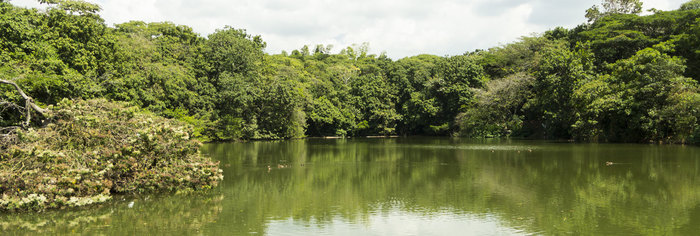
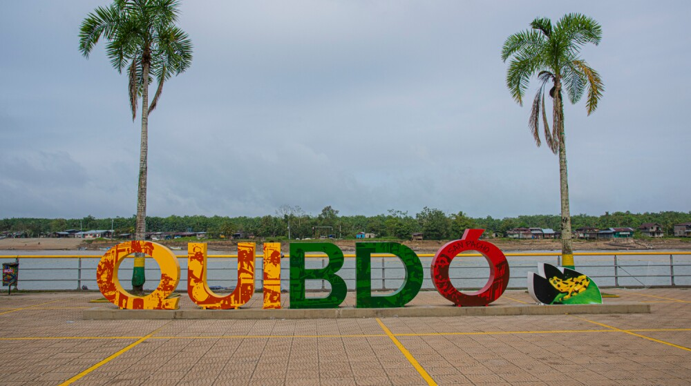
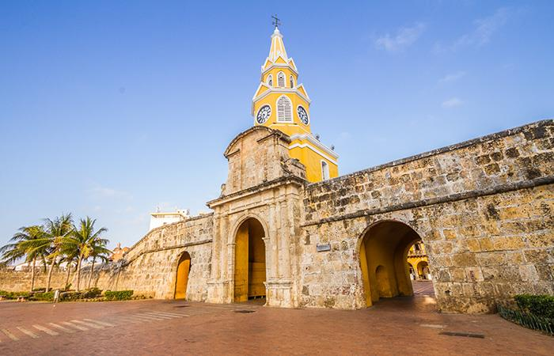
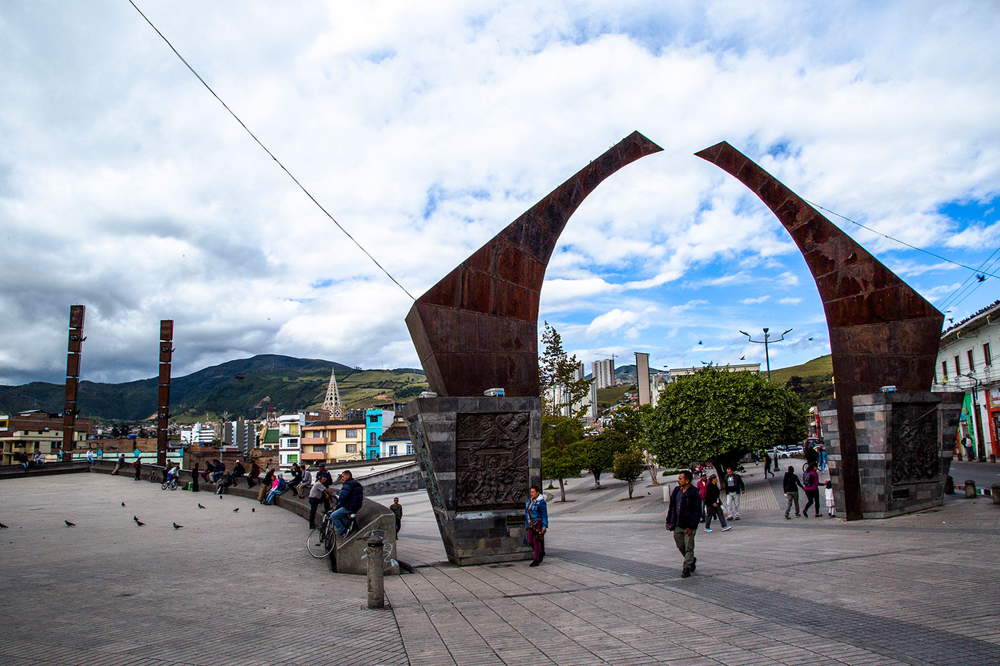

Region Pacifica
El Pacífico colombiano es una de las regiones más bellas y con más sabor en Colombia:
es el escenario de la biodiversa selva del Chocó, paisajes marítimos imponentes como el de Nuquí,
ciudades culturales como Cali, vegetación exuberante como la de Nariño y el hogar de los pueblos indígenas del Cauca.
Departamentos De La Region Pacifica
- Valle del Cauca (Cali).
- Chocó (Quibdó).
- Cauca (Popayán).
- Nariño (Pasto).
Sitios Turisticos Más Visitados De La Region Amazonica Por Cada Departamento
Valle del Cauca (Cali)
PARQUE DEL PERRO
El parque debe su nombre a un perro llamado «TEDDY» quien en la década de 1950 siempre seguía
a un grupo de muchachos mientras estos realizaban diversas actividades hasta que un día el perro mordió a un muchacho del grupo y este en venganza le envenenó.

MONUMENTO A CRISTO REY
Es una estatua de 26 metros de altura ubicada en el Cerro los Cristales a 1440 m s. n. m. en el corregimiento Los Andes, al occidente de la ciudad de Santiago de Cali, Colombia.
El cerro recibe ese nombre debido a la gran cantidad de cuarzos que podían recogerse en sus alrededores.

ECOPARQUE DE LAS GARZAS
Parque frondoso que tiene un lago sencillo con tortugas, peces, patos y aves, y un área de pícnic.
------------------------------------------------------------------------------------
Chocó (Quibdó).

MALECON DEL RIO ATRATO
Es una de las principales vías de comunicación en el departamento de Chocó, uno de los más caudalosos del mundo
el cual ofrece mayor navegabilidad. Su extensión es de 750 km y es navegable unos 500 km.
NUQUÍ
Nuquí es un municipio colombiano en el departamento de Chocó, a 184 km de Quibdó, capital del departamento.
Ubicado estratégicamente en el Pacífico Norte Colombiano. Es un paraíso adecuado para el desarrollo del ecoturismo.
------------------------------------------------------------------------------------
Cauca (Popayán).

TORRE DEL RELOJ
La Torre del Reloj es un hito histórico y arquitectónico que simboliza la riqueza y el poder de Cartagena en la época colonial
RINCON PAYANES
Una réplica en miniatura de Popayán. Eso es el Rincón Payanés, también llamado Pueblito Patojo, que cuenta con copias pequeñas
de los monumentos más representativos de la capital del Cauca, entre los que figuran el Puente del Humilladero, la Torre del Reloj
la Capilla de La Ermita y el Puente Chiquito. Allí se prueban platos típicos de la región y se pueden comprar artesanías y libros.
------------------------------------------------------------------------------------
Nariño (Pasto)

PLAZAN DEL CARNAVAL
La plaza del Carnaval y la Cultura, también llamada plaza del Carnaval
es un espacio público en el centro de la ciudad colombiana de San Juan de Pasto, que acoge cada enero el Carnaval de Negros y Blancos.

PLAZA NARIÑO
La Plaza de Nariño es el punto de referencia central en la ciudad de Pasto
ahí se encontraba el reconocido monumento a Antonio Nariño, razón por la cual se le atribuyó su nombre.